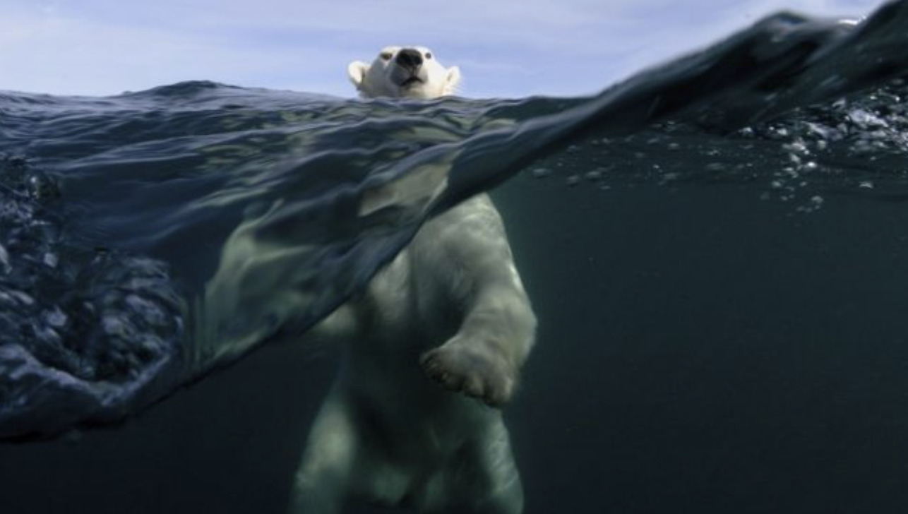

About
My grandmother always loved polar bears. I would get back from school every day and show her this video of a mother polar bear and her two baby polar bears living in the wild, in these documentary-style YouTube videos. I loved watching her watch them because they seemed to bring her so much joy. Learning more about the conditions of polar bears today because of global warming is so disheartening. I can't imagine a world where they don't exist anymore, all because of something we could help prevent. My grandmother lived in a different time, but she still found immense beauty in nature. I want the future generations to be able to experience that same joy we can still experience today; that's why it's important we preserve our earth while we still have that chance. If not for humanity, for the animals who have no say in what we do to their home, their species.
